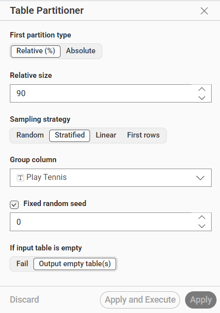
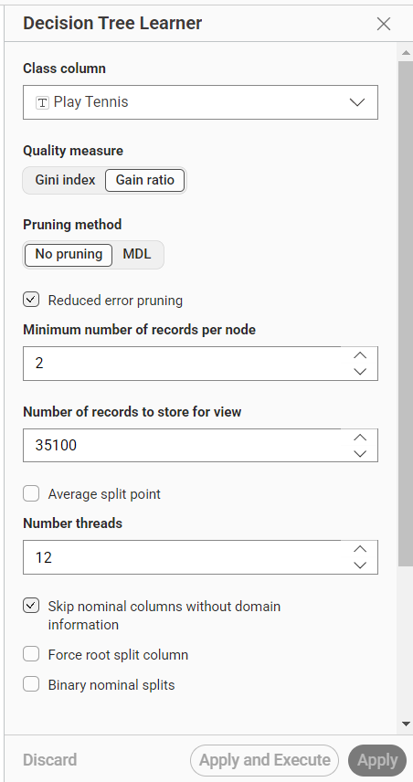
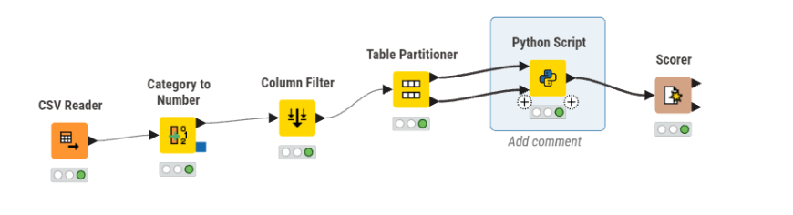
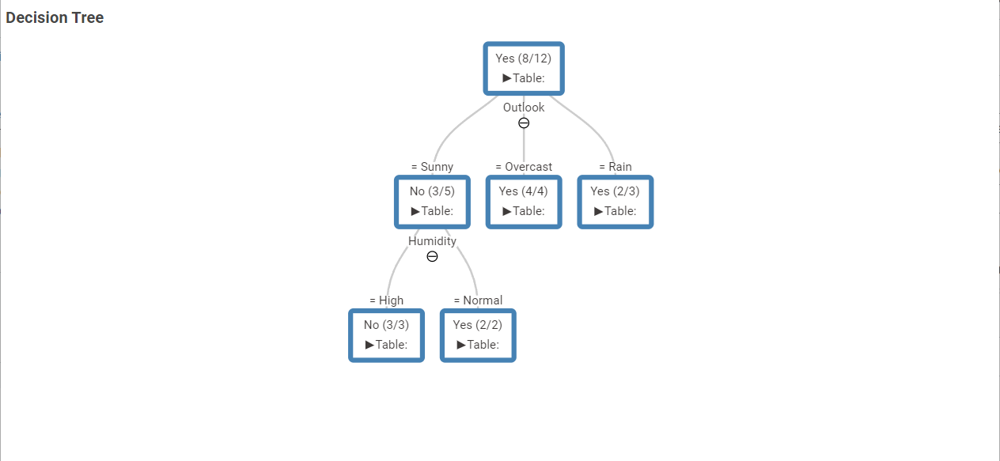
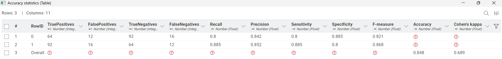

Analisis Data Menggunakan Decision Tree#
Dataset#
Dataset yang digunakan untuk klasifikasi menggunakan metode Decision Tree adalah Play Tennis Dataset. Dataset ini merupakan dataset klasik yang sering digunakan dalam pembelajaran machine learning untuk memahami konsep Decision Tree.
Dataset ini memiliki 14 baris data, 4 fitur (seluruhnya kategorikal), dan 1 label bernama Play Tennis yang memiliki 2 nilai, yaitu Yes yang berarti bermain tenis dan No yang berarti tidak bermain tenis.
Berikut seluruh fitur beserta keterangannya:
No |
Nama Fitur |
Tipe Data |
Deskripsi |
Nilai |
|---|---|---|---|---|
1 |
Outlook |
Kategorikal |
Kondisi cuaca |
Sunny, Overcast, Rain |
2 |
Temp |
Kategorikal |
Suhu udara |
Hot, Mild, Cool |
3 |
Humidity |
Kategorikal |
Kelembapan udara |
High, Normal |
4 |
Wind |
Kategorikal |
Kondisi angin |
True (Berangin), False (Tidak) |
5 |
Play Tennis |
Label |
Apakah bermain tenis atau tidak |
Yes, No |
Berikut adalah isi lengkap dataset yang digunakan:
Day |
Outlook |
Temp |
Humidity |
Wind |
Play Tennis |
|---|---|---|---|---|---|
D1 |
Sunny |
Hot |
High |
False |
No |
D2 |
Sunny |
Hot |
High |
True |
No |
D3 |
Overcast |
Hot |
High |
False |
Yes |
D4 |
Rain |
Mild |
High |
False |
Yes |
D5 |
Rain |
Cool |
Normal |
False |
Yes |
D6 |
Rain |
Cool |
Normal |
True |
No |
D7 |
Overcast |
Cool |
Normal |
False |
Yes |
D8 |
Sunny |
Mild |
High |
False |
No |
D9 |
Sunny |
Cool |
Normal |
False |
Yes |
D10 |
Rain |
Mild |
Normal |
True |
Yes |
D11 |
Sunny |
Mild |
Normal |
True |
Yes |
D12 |
Overcast |
Mild |
High |
True |
Yes |
D13 |
Overcast |
Hot |
Normal |
False |
Yes |
D14 |
Rain |
Mild |
High |
True |
No |
Transformasi Data#
Dataset Play Tennis seluruhnya sudah bertipe kategorikal, sehingga tidak diperlukan proses encoding seperti pada dataset numerik. Node KNIME yang digunakan langsung dapat memproses data kategorikal tanpa perlu dikonversi terlebih dahulu, karena node Decision Tree Learner di KNIME sudah mendukung kolom dengan tipe data string/kategorikal secara langsung.
Partisi#
Sebelum dilakukan proses pelatihan model, data dibagi menjadi data training dan data testing menggunakan node Table Partitioner di KNIME.
Pengaturan yang digunakan pada node Table Partitioner adalah sebagai berikut:
First partition type: Relative (%)
Relative size: 90% → sebagai data training
Sampling strategy: Stratified (menjaga proporsi kelas tetap seimbang)
Group column:
Play Tennis(kolom target yang dijadikan acuan stratifikasi)Fixed random seed: 0 (agar hasil pembagian data konsisten setiap kali dijalankan)
Dengan strategi Stratified, KNIME memastikan bahwa proporsi kelas
YesdanNopada data training maupun data testing tetap seimbang sesuai distribusi aslinya.
Berikut tampilan konfigurasi node Table Partitioner di KNIME:

Implementasi KNIME#
Konfigurasi Node Decision Tree Learner#
Pengaturan yang digunakan pada node Decision Tree Learner adalah sebagai berikut:
Class column:
Play Tennis→ kolom yang menjadi target prediksiQuality measure: Gain Ratio → metode untuk memilih fitur terbaik saat membangun pohon
Pruning method: No Pruning → pohon tidak dipangkas
Reduced error pruning: Diaktifkan
Minimum number of records per node: 2
Skip nominal columns without domain information: Diaktifkan
Gain Ratio adalah metode pengukuran kualitas pemilihan fitur yang merupakan pengembangan dari Information Gain. Gain Ratio memperhitungkan jumlah cabang yang dihasilkan agar tidak memihak fitur dengan banyak nilai unik.
Berikut tampilan konfigurasi node Decision Tree Learner di KNIME:

Alur Workflow KNIME#
Berikut urutan node yang digunakan dalam workflow KNIME untuk implementasi Decision Tree:
Excel Reader
↓
Table Partitioner → [Training Data 90%] → Decision Tree Learner → Decision Tree View
→ [Testing Data 10%] → ↓
Color Manager
↓
Color Appender
↓
Decision Tree Predictor → Scorer
Penjelasan masing-masing node:
Node |
Fungsi |
|---|---|
Excel Reader |
Membaca dataset dari file |
Table Partitioner |
Membagi data menjadi data training (90%) dan data testing (10%) |
Color Manager |
Memberi warna pada setiap kelas untuk keperluan visualisasi |
Decision Tree Learner |
Melatih model Decision Tree menggunakan data training |
Decision Tree View |
Menampilkan visualisasi pohon keputusan yang dihasilkan |
Color Appender |
Menambahkan informasi warna ke data testing |
Decision Tree Predictor |
Memprediksi kelas data testing menggunakan model yang telah dilatih |
Scorer |
Mengevaluasi performa model dengan membandingkan prediksi vs aktual |
Berikut tampilan workflow KNIME yang digunakan dalam implementasi Decision Tree:

Hasil Decision Tree#
Visualisasi Pohon Keputusan#
Berikut struktur pohon keputusan yang dihasilkan oleh KNIME:

Representasi pohon keputusan dalam bentuk teks:
[Yes (8/12)]
|
Outlook
/ | \
=Sunny =Overcast =Rain
[No (3/5)] [Yes (4/4)] [Yes (2/3)]
|
Humidity
/ \
=High =Normal
[No (3/3)] [Yes (2/2)]
Cara Membaca Pohon Keputusan#
Setiap node pada pohon keputusan menunjukkan:
Label kelas: Kelas mayoritas pada node tersebut (Yes/No)
Angka dalam kurung: Jumlah data yang diprediksi benar / total data pada node tersebut
Root Node → Yes (8/12) berarti dari 12 data yang masuk ke node ini, 8 data berlabel Yes.
Aturan Keputusan (Decision Rules)#
Dari pohon yang dihasilkan, dapat diambil aturan sebagai berikut:
Jika
Outlook = Overcast→ Yes (bermain tenis) — 4 dari 4 data benarJika
Outlook = Rain→ Yes (bermain tenis) — 2 dari 3 data benarJika
Outlook = SunnyDANHumidity = High→ No (tidak bermain) — 3 dari 3 data benarJika
Outlook = SunnyDANHumidity = Normal→ Yes (bermain tenis) — 2 dari 2 data benar
Fitur
Outlookdipilih sebagai root node (simpul akar / percabangan pertama) karena memiliki nilai Gain Ratio tertinggi dibandingkan fitur lainnya, artinya fitur ini paling berpengaruh dalam menentukan apakah seseorang akan bermain tenis atau tidak.
Confusion Matrix dan Nilai Akurasi#
Nilai akurasi diperoleh dari node Scorer di KNIME yang membandingkan kolom Play Tennis (nilai asli) dengan kolom hasil prediksi model.

Kesimpulan#
Dari hasil implementasi Decision Tree menggunakan KNIME pada dataset Play Tennis, diperoleh kesimpulan sebagai berikut:
Fitur yang paling berpengaruh dalam menentukan keputusan bermain tenis adalah Outlook (kondisi cuaca), karena menjadi percabangan pertama pada pohon.
Ketika cuaca Overcast, keputusan selalu Yes tanpa perlu melihat fitur lain.
Ketika cuaca Sunny, fitur Humidity menjadi penentu keputusan selanjutnya.
Ketika cuaca Rain, keputusan cenderung Yes meskipun tidak selalu pasti.
Model Decision Tree menghasilkan aturan yang mudah dipahami dan diinterpretasikan secara logis.